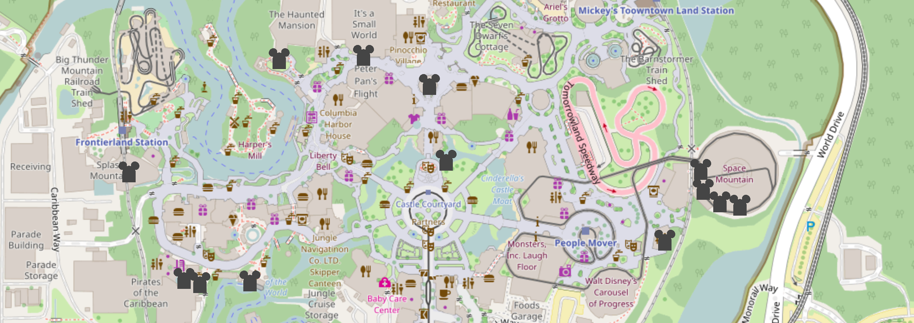

"[T]he limits of memory and representation serve to remind composition
scholars of the significant roles pre-reflective sensations play in our everyday
lives and the responsibilities we hold at the same time to guard against their
theorization or memorialization as such in writing."
—Scot Barnett, "Psychogeographies of Writing"
This is the hardest section to write. In formulating this project, we knew that we wanted to say something, more specifically to write something, but agonized over the exact questions of why and how. In our concern not to instrumentalize the dead, to appropriate tragedy for our creative intents, ethical considerations provide the basis for a methodology. Of course the dead cannot write for themselves, but neither do we wish to presume their voices for them. Though this map gives only a crude representation of the dead at Disney, indicating their hidden presence is a step towards articulating the dead in a distributed subjectivity network.
Scot Barnett introduces his “Psychogeographies of Writing” as rhetoric and composition develops “new maps of writing” (Reynolds) at the “spatial turn.” We pay heed to writing’s “limits of representation” as we create an alternative mapping of WDW. AR and other ubiquitous digital writing tools figure as democratic technologies, seemingly capable of empowering users to inscribe public spaces with emancipatory counter-narratives. Barnett, however, examines the problematics of any writing:
Although attempting to unmask and demystify hidden power relations can satisfy in the short term, doing so also has the potential to leave in place the very thing we hoped to transcend—in this case the problem of yet another representation of space quietly asserting its own truth or authenticity.
DDT attempts to demystify hidden power relations at work in WDW. However, as part of our methodology, we “acknowledge and work creatively with those irreducible aspects of embodied being-in-the-world that haunt the accounts we offer of ourselves but that may never find a comfortable place in the discourses we rely upon to represent and memorialize those accounts."
Critical tourism is the participation through travel in a contest for writing spaces. It involves the embodied experience of tourism as being-in-the-world. Disney represents a highly mediated writing space as well as an iconic tourist space. Ubiquitous mobile computing technologies enable users to introduce unsanctioned personal narratives in officially mediated spaces. In light of Barnett’s admonishments, however, we must be careful not to replace one totalizing narrative with another. We must, in short, acknowledge the limits of critiques contingent upon the limits of representation. DDT seeks ways to tarry with “the limits that accompany our abilities to conceive or represent space (and our being-in space) in the first place.” We consider the implications of being-in-Disney-World as critical actants and phenomenological reactants.
DDT takes the form of a MEmorial which visually commemorates those who have lost their lives at Disney. Employed in such works as Augmented VÉlorutionaries and Roadkill Tollbooth, the MEmorial genre is “not intended to condemn or pass judgment, but instead visualize the invisible sacrifices made on behalf of certain cultural or national values (xiii).” Neither is the MEmorial parody, as Morey insists that the “overall intent is serious.” As a counter-narrative to WDW’s highly mediated spaces and depictions of life and death, DDT provides a means of rumination and reflection on some of the often invisible consequences of modern tourism and entertainment. Moreover, DDT explores the limits and possibilities of the MEmorial genre as distinct from memorial representations.
The inadequacy of representation to account for the irreducible aspects of being-in-the-world leads us to work against “the discourses we rely upon to represent and memorialize those accounts” (Barnett). We treat skeptically the notion of preserving or retrieving memory. By acknowledging the limits of representation, we look for ways of seeing without knowing. How do we see without knowing, and moreover, how do we write without knowing? How do we employ “a language that continuously interrupts the will to craft a narrative out of memory"?
Emplaced thanatourism forwards an ethics attuned to the material specifics of place rather than tropes in abstraction. Letting place speak disperses the topoi of the modernist project into the chora of electracy. In our eagerness to memorialize those who have died in a high-profile space, however, we risk instrumentalizing the dead, a kind of critical profiteering. To avoid containing the irreducible complexities of lived experience to simple obituary, we must ask ourselves two questions: what happens when we introduce death into considerations of lived spatiality, and how do we leave “open and unresolved the impasse between memory and the immemorial”? The former reflects intellectual curiosity, the desire to advance the field. The latter demands doing so ethically.
For Barnett, writing commits violence when it asserts narrative singularity. On our map you find indications of those who have physically died; the challenge before us is to avoid doubling down on ethical violence. Citing Judith Butler, Barnett explains,
“an act of ethical violence occurs when we ask of the other the question ‘who are you?’ and demand in return a satisfactory response capable of presenting a clear and coherent image of the other’s self. Though often couched in the name of ethics, such acts, Butler has argued, nevertheless demand of the other something she cannot possibly provide—namely, an account of the self that is self-identical with the ‘I’ in whose name she speaks.”
Articulating death merely exacerbates writing’s failure to represent what not even the living other can present as a coherent self.
Though we may not be able to substitute writing for the memory of lived experience, we can invoke death’s rhetoricity. According to Diane Davis, “Death marks the absolute limit of identification and (so) of understanding” (“A Rhetoric of Responsibility”). The living cannot offer up the entire experience of self, but only the dead can reveal life: “‘my’ finitude…can communicate itself to me only through ‘your’ mortality.” Davis offers a model of rhetoric [nonviolent expropriation]...
Death’s revelation is rhetorical appeal to action. When “communal life holds itself ‘at a level equal to death,’” responsibility emerges as the behaviors accordant to life’s ultimate consequence. Disney Death Tour invites the dead as memento responsabilitas. Though the MEmorial is not inherently polemic, but instead an exploration of community values, the form nevertheless includes this condition: “If when confronted with the visibility of these losses, argued Ulmer, and we do not see such sacrifices as worth the cost, then we must change our values and attitudes” (Ghost Bikes). Our tour visualizes abject sacrifice, but we forward no explicit agenda regarding change–seeing without knowing. By recognizing structural death at Disney as a site of communal values in addition to entertainment, by writing death into the Magic Kingdom outside its containerized depiction at the Haunted Mansion, Disney Death Tour opens the potential for otherwise suppressed (re)considerations.
“Toward the integration of the body with digital information, electracy ‘proposes that direct access to databases must be through “mindbodies,” engaging mappings among orifices, brain, culture, and technics’” –Avatar Emergency, qtd. in Morey
“...down from all/ Heights all levels of American breath layered in the lungs from the frail/ Chill of space to the loam where extinction slumbers...”—James L. Dickey, “Falling”
“Death Drive(r)s” is a mobile augmented reality app which overlays digital markers at the sites of ghost bikes. The MEmorial app is a double reminder of both the loss of cyclists’ lives and the removal of the physical monuments to them. To alert users to hidden presence, Greene and Jones suggest utilizing smart phones’ push-notifications: “In this way, the digital (re)placement would work in a similar way to the physical ghost bike in that members of the public could not avoid knowing that death occurred at this location.” GPS-triggered push notifications extract salience from ambience. Environs already suffused with meaning, in this case the unseen presence of death, “push” salient information to the fore.
Ours and other AR projects act like a sixth sense; we see dead people. But in attempting ways of “seeing without knowing,” in Barnett’s terms, our tour avoids imposing additional narratives to the phenomena of these deaths. At the same time, we must acknowledge that within a model of distributed subjectivity, individual actors still testify to their networked situations. Furthermore, in alignment with Ulmer’s phrase “the community in me” (Internet Invention), what we see is as much a reflection of ourselves as any attempt to name the other.
A MEmorial begins with a wound, the punctum. Set apart from studium, reliably predictable connotative meaning, punctum describes defiantly personalized affective response. Uncannily, Barthes explicates his theory of punctum with an example of death, a photograph of a prisoner prior to his hanging, of which Barthes remarks that the “photograph is handsome, as is the boy: the is the studium. The punctum is: he is going to die. I read at the same time. This will be and this has been; I observe with horror an anterior future of which death is the stake” (96). Further defining punctum, Quinn R. Gorman ascribes to it two features: “the detail that seems to resist the photographer’s intentions” and that which “bears on time and death” (247). Thus the punctum generates a highly individualized alter-narrative to controlled space and puts the me in MEmorial.
This tour began with Raymond Barlow’s death. His stands out, stings, in ways I* can only attempt to explain. Thus, punctum indicates what Barnett calls irreducible, pre-reflexive experience. Drawing from Christian Nold’s biomapping, substituting biofeedback sensors with this notion of punctum, I can map onto my pre-reflexive response a narrative explanation of its significance. Our Disney Death Tour encourages other thanotourists to explore their own creative alter-narratives generated by “punctum-notifications.”